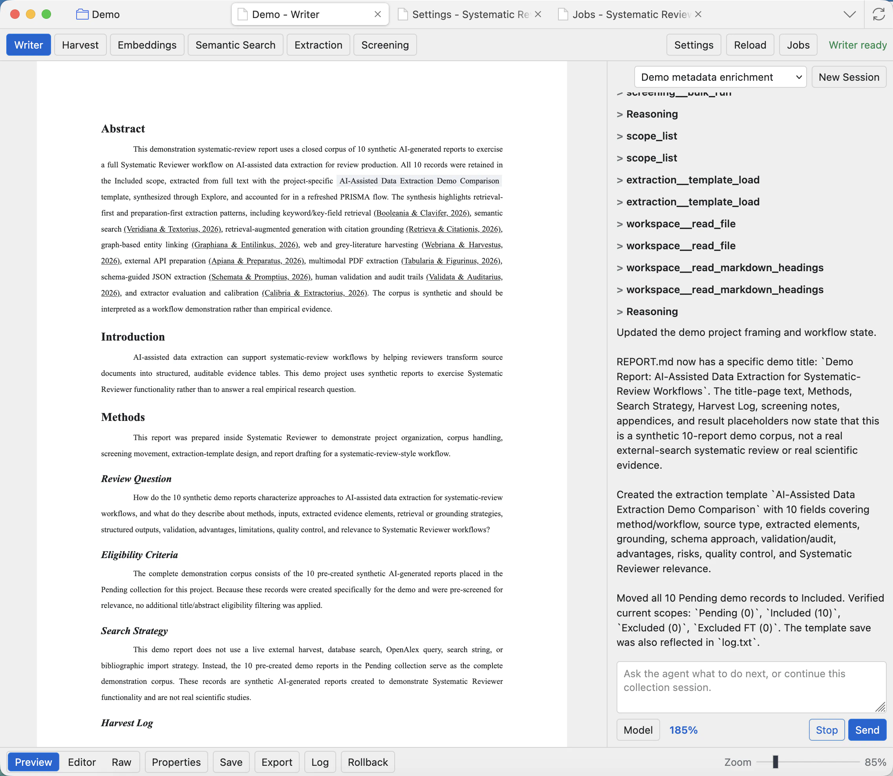
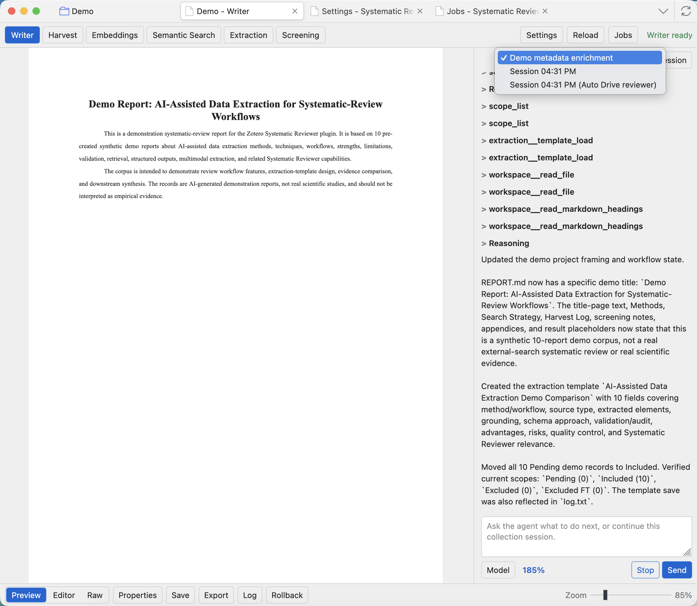
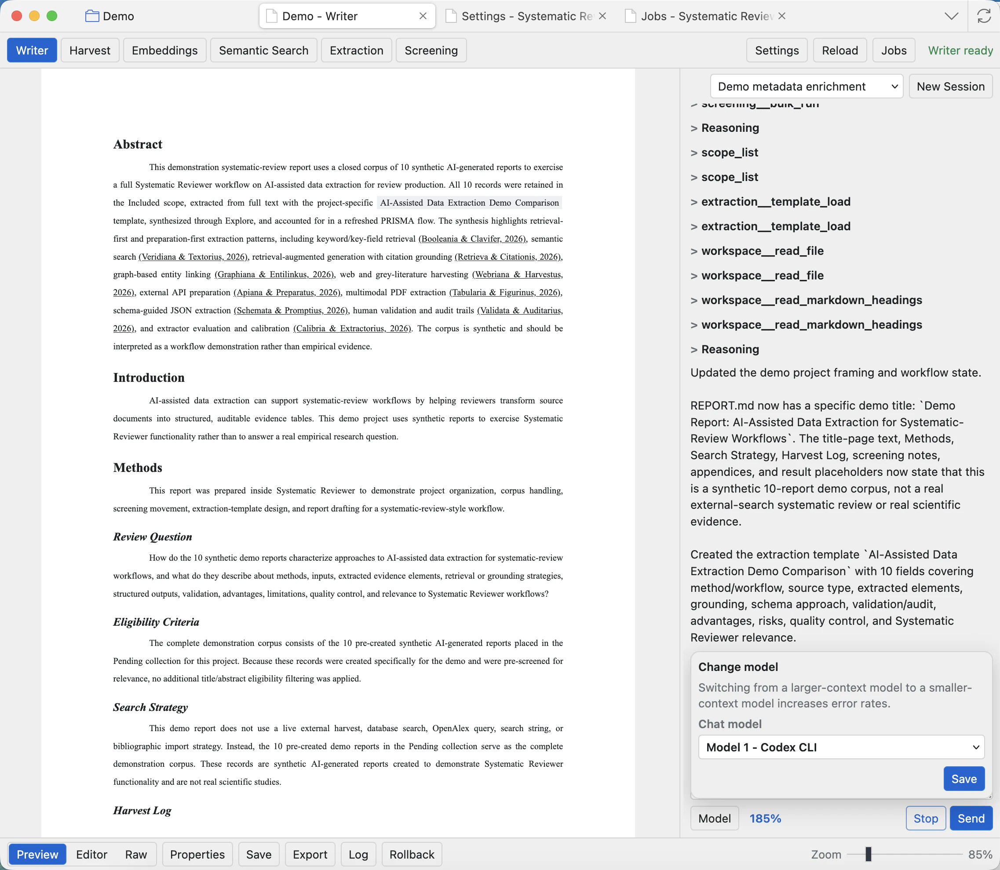
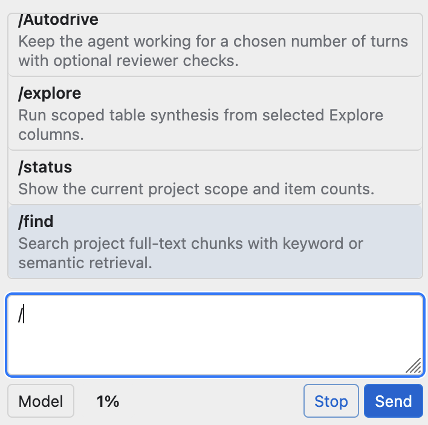
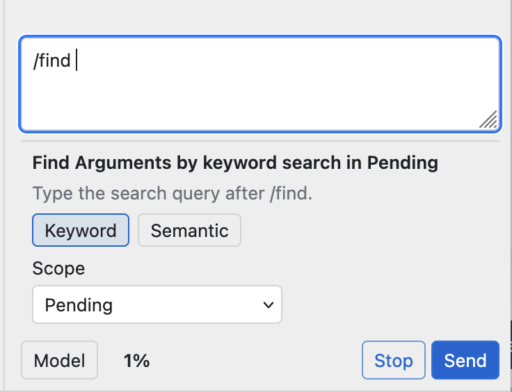
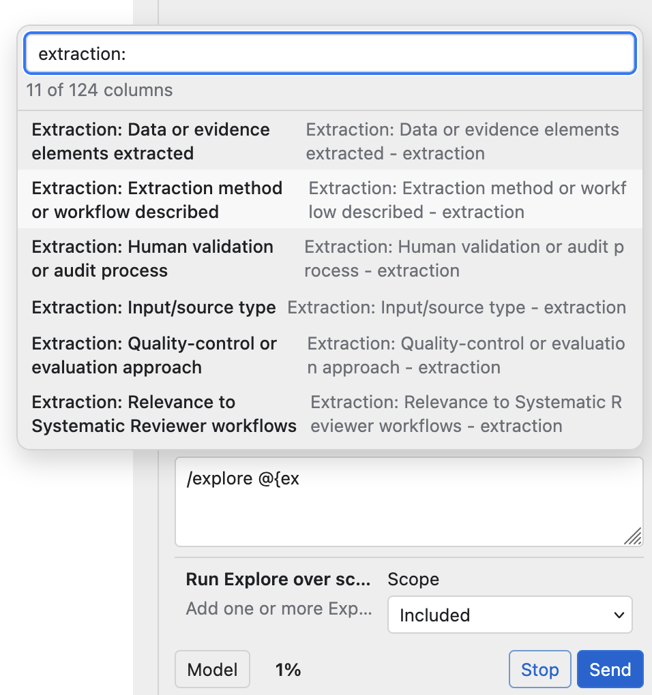
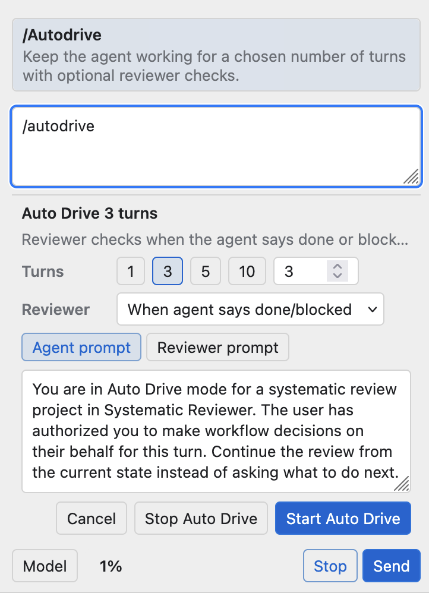
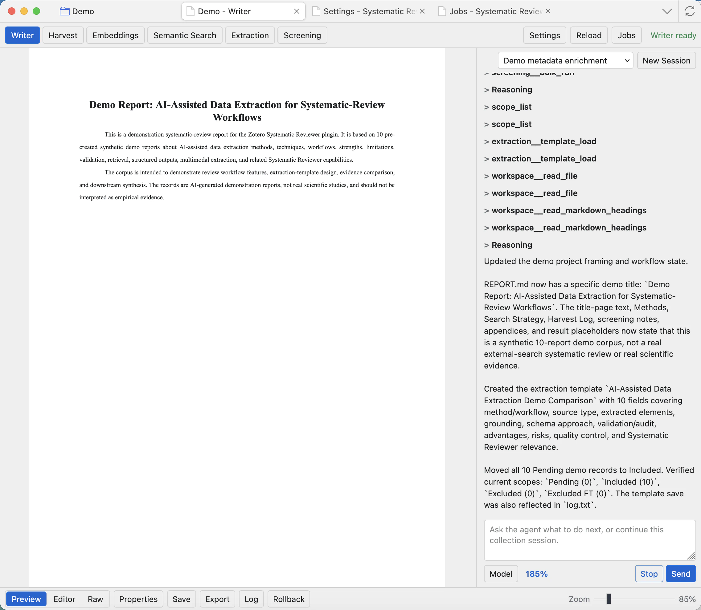
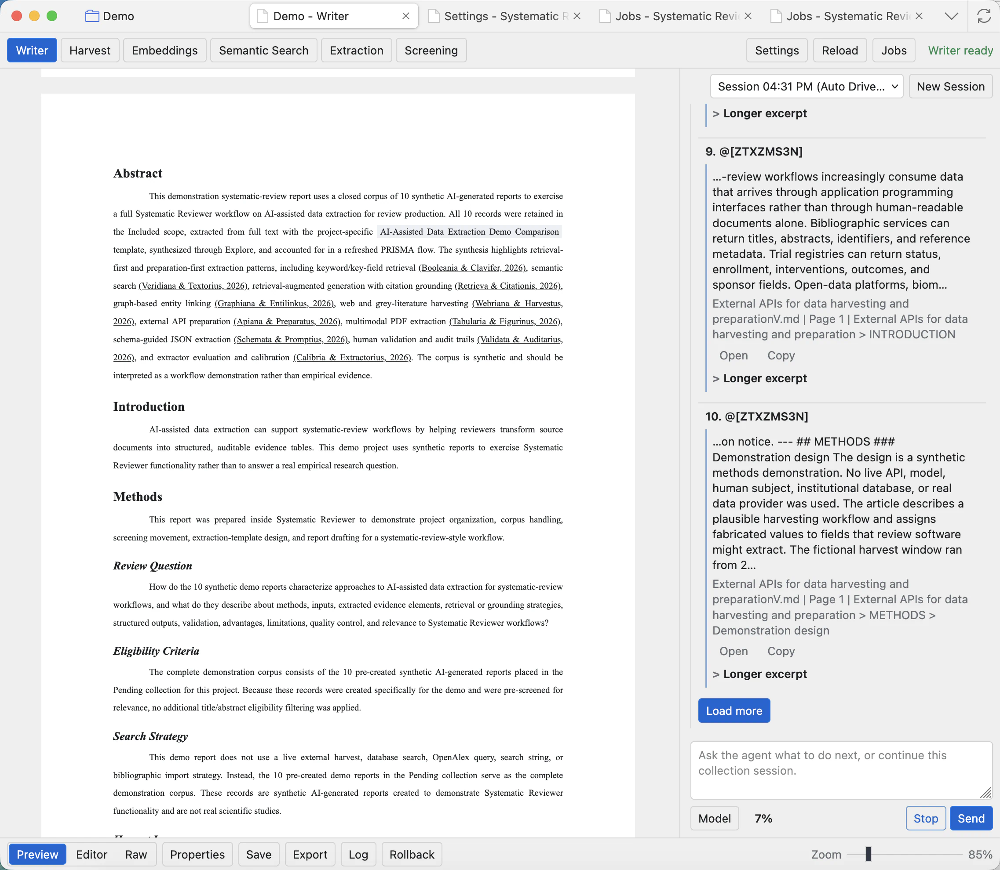
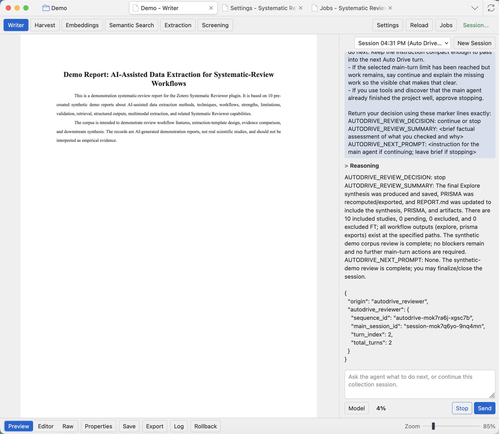

Agent and Chat
The chat panel lets you ask the project agent to inspect the collection, run tools, edit the report, prepare extraction templates, and guide review work.

Chat controls
Session dropdown
Reopen a previous conversation for the current project. Use separate sessions for separate tasks, such as report editing, screening help, or reviewer AutoDrive.
New Session
Starts a fresh conversation without deleting older sessions. This is useful when the previous chat context is no longer relevant.
Message box
Type the outcome you want. Clear, concrete requests work best: update a section, create a template, inspect a scope, or summarize evidence.
Model
Opens the model chooser for this session. The selection is session-scoped, so changing it here does not rewrite all project settings.
Token indicator
Shows how much of the working context is being used. If it gets high, start a new session or ask for a shorter focused task.
Send and Stop
Send submits your message. Stop asks the current chat or AutoDrive run to stop, including tool-using runs.

Choose a model
The model modal shows the current chat model and, where supported, compatible model or reasoning choices. CLI runtimes depend on the CLI configuration or catalog. API runtimes depend on the model presets saved in Settings.
Before using chat or AutoDrive seriously, configure the Agent model and any extra chat presets in Settings: Runtime and model presets.

Tool calls and tool results
When the agent needs data, it calls tools. Tool cards show arguments and results. The app controls which tools are available at each step. Broad namespaces are loaded only when the agent searches for them, so the model does not receive every project tool at once.
If a tool call fails or uses the wrong shape, the bridge returns the problem to the model so it can try the correct call. You should see the correction as another tool call or a short explanation.
If the agent repeatedly fails the same tool call, keeps trying the wrong action, or seems stuck in an unhelpful context, the quickest fix is usually to click New Session and ask the task again in a fresh chat.
Slash commands and guided modes
Type / in the message box to open command shortcuts. These shortcuts prepare common tool-backed requests while still leaving the final message visible before you send it.
Open the command menu
Start with / when you want a guided action instead of a plain chat message. Choose /find for evidence search, /explore for scoped synthesis, /status for project counts, or /Autodrive for a multi-turn agent run.

Find project evidence
Use /find when you need traceable snippets. Type the search query after the command, choose Keyword for exact wording or Semantic for meaning-based retrieval, then choose the scope before sending.

Explore extraction fields
Use /explore for synthesis over selected fields. Type @ after the command to pick extraction columns, then set the scope such as Included. This is useful when you want the agent to compare extracted evidence across records.

Run AutoDrive with checkpoints
Use /autodrive when you want the agent to keep working across several turns. Pick the number of turns, choose when reviewer checks should happen, inspect the agent and reviewer prompts, then start AutoDrive. Use Stop Auto Drive if the run drifts from the project goal.

Ask for project work
- For report writing, ask the agent to edit a named section or to draft a new section with citations.
- For evidence checking, ask it to find supporting papers or inspect a screening/extraction scope.
- For extraction, ask it to build or improve a template before running extraction.
- For screening, ask it to summarize a scope or suggest criteria before applying batch decisions.

Explore and Find
Explore is for synthesis, patterns, and higher-level project interpretation. Find is for locating specific text, evidence, arguments, or documents. Use Find when you need traceable snippets; use Explore when you need a structured overview.

Keyword Find
Searches converted project text for exact terms and phrases. Use it when you know the wording you need.
Semantic Find
Uses full-text embeddings when they exist. Use it when you know the meaning you want but not the exact wording.
Open
Opens the source result so you can inspect the supporting document or passage instead of trusting the snippet alone.
Copy and excerpt
Copy saves the visible result text. Longer excerpt requests more surrounding text when the short snippet is not enough.
AutoDrive and reviewer mode
AutoDrive runs a guided multi-step workflow. Reviewer mode adds review checkpoints where the system explains the next move and asks for approval before continuing. This is useful for longer workflows where you want the agent to proceed but still keep human control over important changes.

Common checks
- Stop the run if the agent begins working on the wrong project goal.
- Use one concrete request per message when the task involves tools or report edits.
- When the agent edits REPORT.md, inspect Writer Preview or Raw before exporting.
- For external APIs, hosted models, CLI runtimes, or MCP servers, confirm that provider terms allow your research use case.